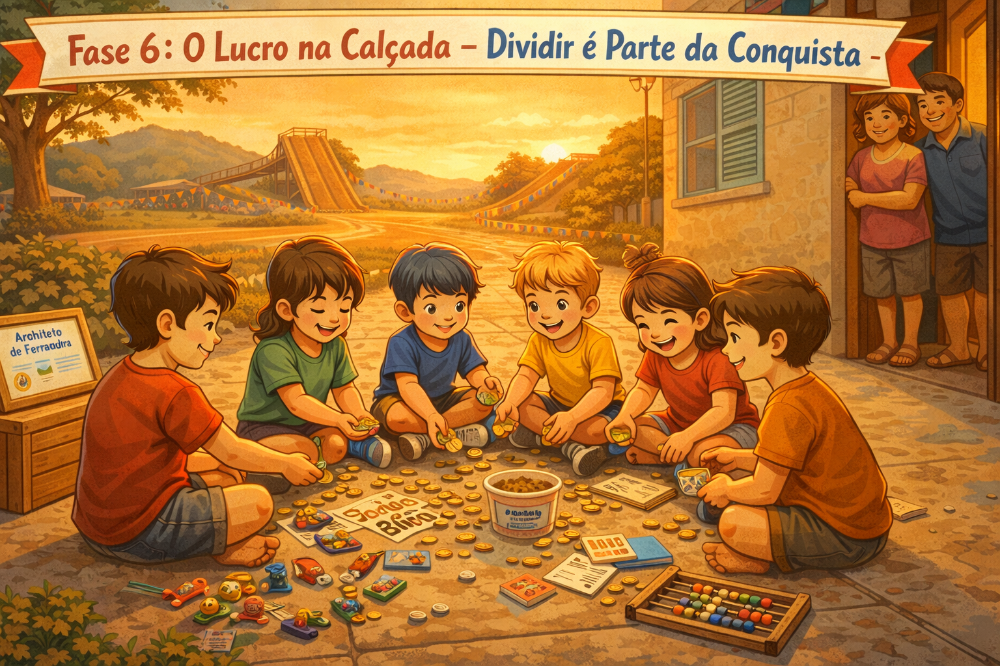

No final da tarde, os seis amigos sentavam na calçada e dividiam o lucro — tudo o que tinham construído juntos. Aqui você organiza o que aprendeu: resumo da jornada, exemplos criados e próximos passos de estudo.

README.md simples e clarofeat, fix, docs, refactordistribuir_lucro(): divisão justa entre contribuidoresREADME.md simples com descrição e instruçõespages_ferradura/A metáfora final do Circuito: os 6 amigos na calçada, dividindo o que ganharam. No código, isso significa distribuir crédito de forma proporcional às contribuições.
# distribuir_lucro() — a calçada em código
def distribuir_lucro(
total: float,
participantes: list[str] | None = None,
) -> dict[str, float]:
"""Distribui lucro igualmente entre os participantes.
Args:
total: Valor total a distribuir, em reais.
participantes: Lista de nomes. Padrão: os 6 amigos.
Returns:
Dicionário no formato {nome: valor_recebido}.
"""
if participantes is None:
participantes = [
"Ciclano",
"Tobias",
"Marieta",
"Zelão",
"Pimenta",
"Grilo",
]
valor = round(total / len(participantes), 2)
return {
nome: valor
for nome in participantes
}
resultado = distribuir_lucro(120.0)
for nome, valor in resultado.items():
print(f" {nome}: R$ {valor:.2f}")
Ciclano: R$ 20.00
Tobias: R$ 20.00
Marieta: R$ 20.00
Zelão: R$ 20.00
Pimenta: R$ 20.00
Grilo: R$ 20.00Um histórico Git limpo é tão importante quanto o código. Commits semânticos contam a história do projeto — cada um sabe o que foi feito e por quê.
# Padrão: tipo(escopo): descrição concisa
git commit -m "feat(fase01): adiciona função calcular_abaco()"
git commit -m "fix(fase02): corrige colisão da bola na borda inferior"
git commit -m "docs(readme): adiciona badges de versão e licença"
git commit -m "refactor(bot): extrai lógica de predição para BotFerradura"
git commit -m "test(distribuir): adiciona testes para valores extremos"
git commit -m "chore(deps): atualiza scikit-learn para 1.4.0"O README é a calçada do seu projeto — a primeira coisa que qualquer pessoa vê. Ele deve contar o que é, como rodar e o que você aprendeu.
# Estrutura recomendada para README.md
# 🏁 Circuito Ferradura
!Version
!Python
!License
> Trilha introdutória de lógica e Python inspirada nas corridas de bicicleta
> de Palotina-PR, 1993. Material em evolução da Cara Core Informática.
## 🚀 Como rodar
```bash
pip install -r requirements.txt
python circuito_ferradura/demo.py
```
## 📁 Estrutura
```
├── circuito_ferradura/ # Código-fonte do simulador
├── pages_ferradura/ # Site de apresentação (GitHub Pages)
└── testes/ # Suíte de testes pytest
```
## Registro de conclusão
Ao concluir as 6 fases, você pode gerar um registro local de conclusão:
https://circuito.caracore.com.br/curso/conclusao.htmlDas variáveis na terra vermelha de Palotina até a organização dos exemplos — você chegou ao fim desta trilha introdutória. Agora é hora de registrar sua conclusão localmente.
Registrar minha conclusão →